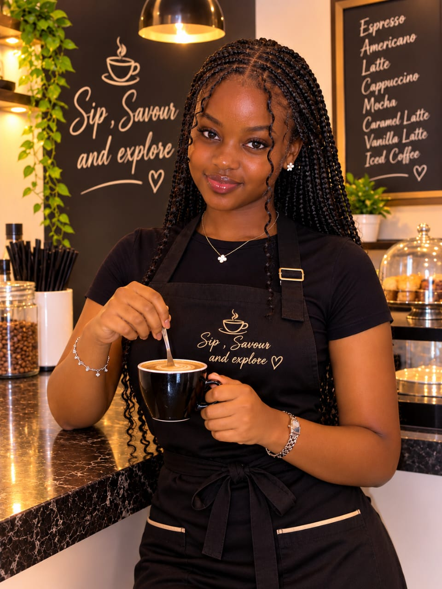

Quality
Only freshly roasted, single-origin Kenyan beans.
Sip, Savour and Explore!

Savanna Brew Café opened in 2019 with one small espresso machine and a big dream: to celebrate Kenyan coffee. Founder Ndirangu Lucy grew up on her grandparents' coffee farm in Nyeri and wanted to bring that flavour to the city. Today the café supports local farmers, uses eco-friendly packaging and hosts community events every month.
Only freshly roasted, single-origin Kenyan beans.
Fair prices for farmers and a welcoming space for all.
Compostable cups and zero-waste pastries.
Karibu! Sip, Savour and Explore. Enjoy a complimentary cup of cofee, our little thank you to the farmers whose hands bring every bean to life.